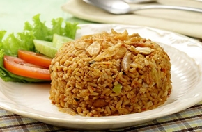

< < Daftar resep
bahan |
cara memasak
Nasi Goreng

Nasi goreng juga dikenal sebagai masakan nasional Indonesia. Dari sekian banyak hidangan dalam khazanah Masakan Indonesia, hanya sedikit yang dapat dianggap sebagai makanan nasional sejati. Masakan nasional Indonesia ini tidak mengenal batasan kelas sosial. Nasi goreng dapat dinikmati secara sederhana di warung tepi jalan, gerobak penjaja keliling, hingga restoran dan meja prasmanan dalam pesta.
Pada tahun 2011, sebuah polling Internet yang diadakan oleh CNN International dan diikuti oleh 35.000 orang menempatkan Nasi Goreng pada peringkat dua dalam daftar '50 Makanan Terlezat di Dunia' setelah rendang.
Bahan-bahan:
- 1 piring nasi
- 2 sdm minyak goreng
- 2 butir telur
- 3 buah tomat ceri (potong sesuai selera)
- 1 batang daun bawang (cincang kasar)
- Kerupuk (secukupnya)
- Margarin Secukupnya
- 2 siung bawang putih & 3 siung bawang merah
- 3 buah Cabe Rawit
- 2SDM Kecap
- Gula & Garam Secukupnya
Cara Memasak:
- Panaskan margarin sampai leleh, masak telur orak-arik lalu sisihkan.
- Tambahkan minyak goreng dan bumbu halus, aduk rata, masak hingga harum.
- Masukkan nasi ke dalam adonan telur dan bumbu, aduk rata. Tambahkan daun bawang, aduk kembali.
- Sajikan bersama topping tomat ceri dan kerupuk juga sedikit hiasan daun seledri juga irisan cabai merah.
kembali keatas
< < Daftar resep